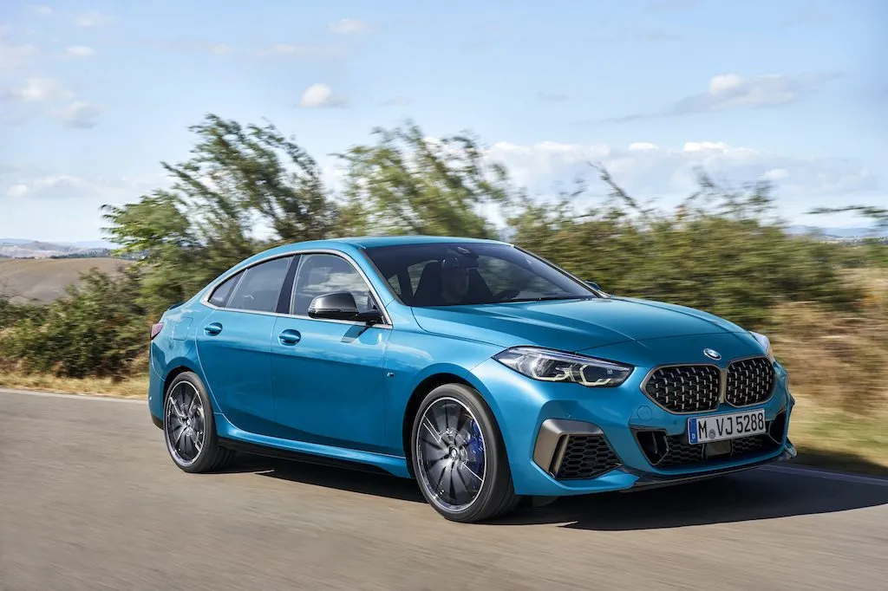
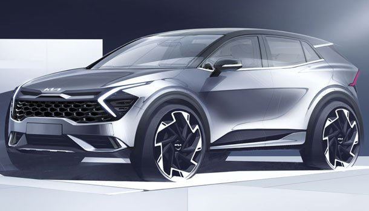
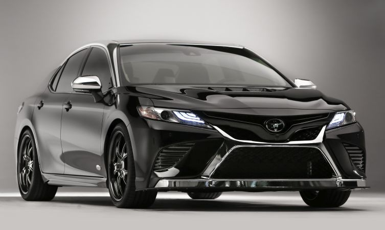
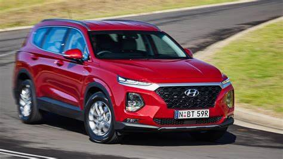

Home Page
Five Best Cars
The first one is the BMW 2 Series is the best cars for a family of five
The BMW 2 Series is built in there San Luis Potosi plant in Mexico
The second one is a Kia Sportage is the secound best for a family of five
The Kia Sportage is made in West Point, Georgia
This is the third one is the Volkswagen Tiguan
The Volkswagen Tiguan is built in Wolfsburg,Germany for the Europe,Africa,Asia and Oceania market
The Tiguan is also made in Puebla Mexico.

The fourth one is the Toyota Camry Hybrid
The Toyota Camry is built in the Tsutsumi Factory in Japan
The Hyundai Santa Fe is the fifth and final one
The Hyundai Santa Fe is made in South Korean
More information on the BMW 2 Series
More information on the Kia Sportage
More information on the Volkswagen Tiguan
More information on the Toyota Camry Hybrid
More information on the Hyundai Santa Fe